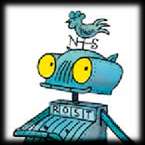
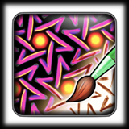

Ideen og utviklingen av dette programmet er gjort av
Prof. Dr. Dr. Jürgen Richter-Gebert (Technische Universität München, Geometri og Visualisering)
Alle programmene er utviklet ved hjelp av "The Interactive Geometry Software Cinderella" (www.cinderella.de)
Opphavsrettigheter: Prof. Dr. Dr. Jürgen Richter-Gebert & Prof. Dr. Ulrich Kortenkamp
>>> For mer informasjon om Cinderella se:

Ritter Rost Graphics med velvillig samtykke
Terzio Forlag München

For mer informasjon om "Interactive Ornament Software" se: iOrnament
www.science-to-touch.com/iOrnament
Videre ønsker vi å takke
Vanessa Krummeck (diverse fotografier), Peter Lebmeir (Sudoku programmet), Robin Mohr & Wanda Hill (geometrisk grafikk),
ThinkFun Inc. (RushHour), Lunartecture (Framtidsarkitektur),
Christian Hausen (Fluorite (mineral))